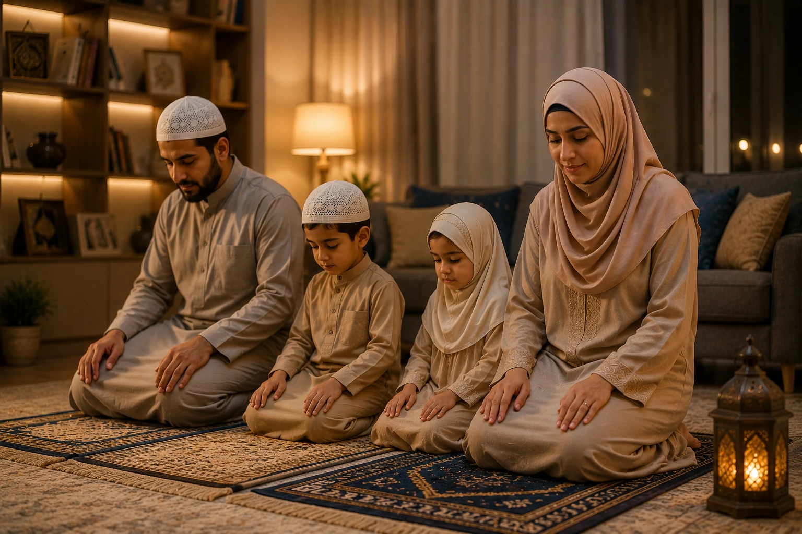
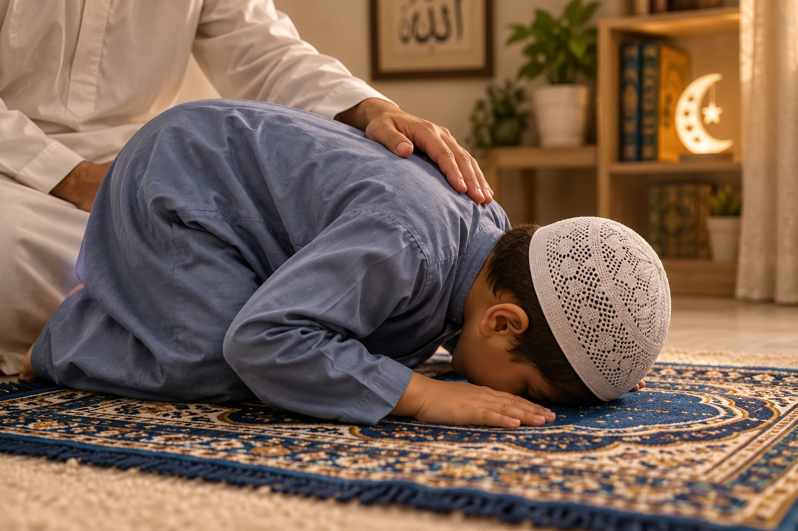
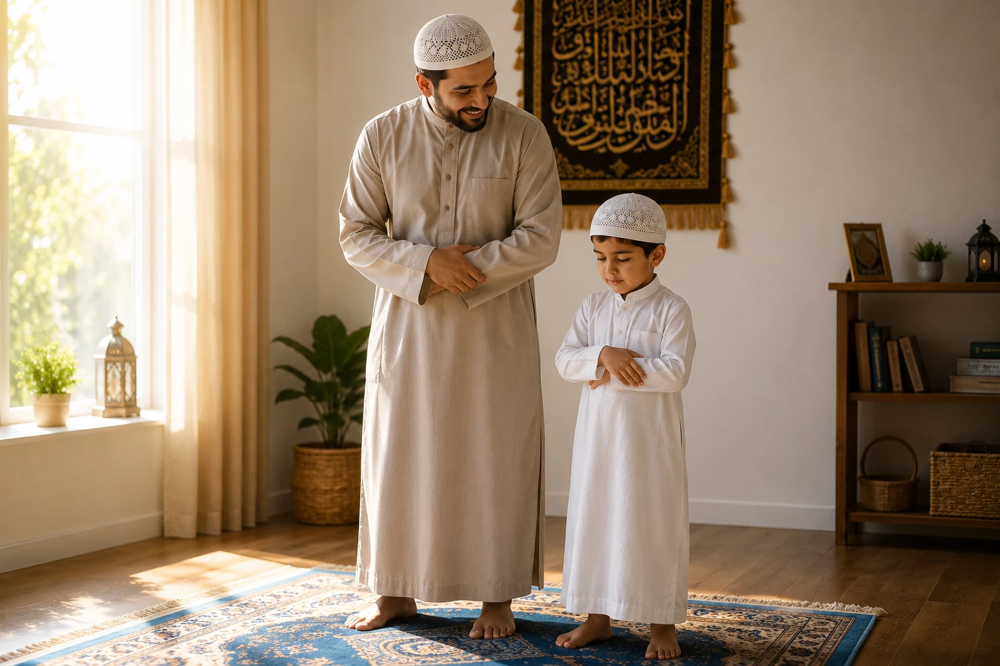

Teaching your child to pray salah is one of the most important responsibilities of a Muslim parent. Yet, it is also one of the most delicate. If done with love, patience, and wisdom, salah becomes the most beloved part of their day. If done with force and frustration, it becomes a burden they may carry for life. In this comprehensive guide, we will walk you through 7 easy, gentle, and proven steps to teach your child salah — rooted in the Sunnah of the Prophet Muhammad (peace be upon him) and modern child psychology.
📖 In This Complete Guide, You'll Learn:
- The exact age to start teaching salah (and what to do at each stage)
- How to make prayer time joyful, not a chore
- 7 gentle, step-by-step methods to teach the movements and words
- How to handle resistance, distraction, and refusal without anger
- The Sunnah of praying together as a family
- Common mistakes parents make (and how to avoid them)
🔑 Key Takeaways
- Ages 3-7 are for love and familiarity; ages 7-10 are for gentle consistency.
- Never use salah as a punishment or source of shame.
- Children learn more from watching you pray than from being told to pray.
- Praise effort, not perfection — especially in the early years.
- Make dua sincerely; guidance (Hidayah) comes only from Allah.

📑 In This Article
- The Islamic Foundation: When and Why to Start
- Step 1: Let Them Watch You (Ages 2-4)
- Step 2: Give Them Their Own Prayer Space
- Step 3: Pray Together, Side by Side
- Step 4: Teach the Movements Gently
- Step 5: Introduce the Words Slowly
- Step 6: Build Consistency Without Pressure
- Step 7: Make Dua and Trust Allah
- Common Mistakes to Avoid
- Frequently Asked Questions
- Final Thoughts
The Islamic Foundation: When and Why to Start
The Prophet Muhammad (peace be upon him) gave us clear guidance on this matter:
"Command your children to pray when they are seven years old, and discipline them for it when they are ten."
— Sunan Abu Dawud 495, SahihScholars explain this hadith beautifully: the years between 3 and 7 are for introduction and love. The years between 7 and 10 are for gentle discipline and consistency. After 10, it becomes an obligation with accountability.
But here's the secret most parents miss: you can start as early as age 2 or 3 — not by commanding, but by inviting. Let them see you pray. Let them mimic you. Let them associate the prayer mat with warmth, peace, and your attention. By the time they reach 7, salah will feel like a natural, beloved part of their day.
Step 1: Let Them Watch You (Ages 2-4)
Before you teach a single word or movement, your child needs to see salah as a normal, beautiful part of life. This is the foundation.
What to Do:
- Pray your 5 daily prayers consistently in front of them.
- Let them see you make Wudu with a calm, positive attitude.
- Smile when you finish praying. Say things like, "Alhamdulillah, that felt so peaceful."
- Never rush through prayer when they're watching. Show them that this time is sacred.
If they come near you during prayer, gently pat their back or smile at them. Don't push them away. You want them to feel included, not rejected, during your connection with Allah.
Step 2: Give Them Their Own Prayer Space
Children love having things that are "theirs." A dedicated prayer space makes salah feel special and exciting.
What to Do:
- Get them a colorful, child-sized prayer mat. Let them pick the color or design.
- For girls, get a cute, comfortable hijab they can wear just for prayer.
- For boys, a simple kufi (cap) can make them feel grown-up and proud.
- Place their mat next to yours. This physical closeness builds emotional connection.
When they see their "special mat" waiting for them, they'll naturally want to use it. This is the power of positive association.

Step 3: Pray Together, Side by Side
Once they're comfortable being near you during prayer, invite them to join — not as a command, but as a joyful invitation.
What to Say:
- "Come, let's have our special talk with Allah together!"
- "I love praying next to you. It makes my heart happy."
- "Let's go thank Allah for this beautiful day."
What to Do:
- Stand side by side, not behind them. They need to see you.
- Move slowly and exaggerate your movements slightly so they can follow.
- If they stand, sit, or prostrate at the wrong time, don't correct them immediately. Let them enjoy the experience.
- After prayer, hug them and say, "Masha'Allah, that was beautiful!"
Once, the Prophet (PBUH) was leading prayer and his grandson Al-Hasan climbed on his back during Sujood. The Prophet (PBUH) prolonged his prostration so the child could finish playing. When asked about it, he said: "My son was riding me, and I disliked to hurry him until he had finished his need."
— Sahih Al-Bukhari 2028This is the level of patience and love we must embody. Salah should never feel like a rigid, joyless obligation to a child.
Step 4: Teach the Movements Gently
Once they're comfortable praying with you, you can slowly start teaching the correct movements. Use the "I do, we do, you do" method.
The Method:
- I do: "Watch me first. See how I stand with my hands like this?"
- We do: "Now let's do it together. Ready? Bismillah!"
- You do: "Now you show me! Masha'Allah, you did it so well!"
Break It Down Simply:
- Standing (Qiyam): "We stand tall like a strong tree, facing the Ka'bah."
- Bowing (Ruku): "We bow down like this, and say 'Subhana Rabbiyal Azeem' — Allah is so great!"
- Prostrating (Sujood): "This is our favorite part! We put our forehead on the ground, closest to Allah. We can ask Him for anything here!"
- Sitting (Tashahhud): "We sit quietly and send peace to the Prophet (PBUH)."
Tell your child: "Sujood is when we are closest to Allah. This is your secret time to ask Him for anything — a new toy, a sick pet to get better, or just to say 'I love You, Allah.'"
Step 5: Introduce the Words Slowly
Don't overwhelm them with all the Arabic at once. Start small and build gradually.
Phase 1 (Ages 3-5): Just the Basics
- Teach them to say "Allahu Akbar" when starting.
- Teach "Subhana Rabbiyal Azeem" in Ruku.
- Teach "Subhana Rabbiyal A'la" in Sujood.
- That's it! Keep it simple and joyful.
Phase 2 (Ages 5-7): Add Surah Al-Fatihah
- Teach Al-Fatihah slowly, verse by verse.
- Use repetition and songs to help them memorize.
- Once they know Al-Fatihah, add a short Surah like Al-Ikhlas.
Phase 3 (Ages 7+): Complete the Prayer
- Teach the Tashahhud and the final Salam.
- Explain the meaning of what they're saying in simple terms.
- Encourage them to make personal dua in Sujood in their own words.
"Allahu Akbar"
"Allah is the Greatest"
Step 6: Build Consistency Without Pressure
This is where many parents struggle. How do you make salah a habit without turning it into a daily battle?
The Gentle Approach:
- Use reminders, not commands: Instead of "Go pray now!", say "It's prayer time! Should we pray together?"
- Tie it to daily routines: "After we eat, let's pray Maghrib together."
- Celebrate consistency: "Masha'Allah, you prayed all 5 prayers today! Allah must be so happy with you."
- Never use salah as punishment: Never say "Go to your room and pray!" This creates a negative association.
When They Refuse:
If your child refuses to pray, stay calm. Ask gently: "Is everything okay? Do you feel tired? Do you have questions about prayer?" Sometimes refusal is a sign of confusion, fatigue, or a need for connection — not rebellion.
"You're a bad Muslim if you don't pray!" "Allah will punish you!" "I'm so disappointed in you!" These phrases create shame and push children away from salah permanently.
Step 7: Make Dua and Trust Allah
At the end of the day, guidance (Hidayah) comes only from Allah. You can do everything right and still face challenges. This is where sincere dua becomes your most powerful tool.
"Rabbij'alni muqeemas-salati wa min dhurriyyati, Rabbana wa taqabbal du'a."
"My Lord, make me an establisher of prayer, and [many] from my descendants. Our Lord, and accept my supplication." (Surah Ibrahim 14:40)
Recite this dua constantly, especially in the last third of the night (Tahajjud time) and during Sujood. Your sincere tears and whispered prayers are more powerful than any parenting technique.
Common Mistakes to Avoid
Waiting until age 7 to even introduce salah is a missed opportunity. Start with love and exposure from age 3.
Correcting every small mistake during prayer creates anxiety. Praise the effort first; refine the details gradually.
If you skip prayers or rush through them, your child will too. Be the example you want them to follow.
Threatening children with Hellfire or Allah's anger at a young age damages their relationship with Allah. Focus on His love and mercy first.
"Look at your cousin, he prays perfectly!" This breeds resentment, not motivation. Every child blooms at their own pace.

Frequently Asked Questions
Start Today, Even If It's Just One Step
You don't have to implement all 7 steps perfectly today. Pick one — maybe just getting them a colorful prayer mat or praying together once. Build from there. May Allah make your children lovers of Salah and the coolness of your eyes.
What is your biggest challenge in teaching your child salah? Share below so we can support each other!
Final Thoughts
Teaching your child to pray salah is not a one-time lesson; it's a lifelong journey of love, patience, and trust in Allah. There will be days when they pray with joy and days when they resist. Both are normal. Your role is not to force perfection but to plant seeds of love that will grow into a strong, unshakeable connection with Allah. Remember the Prophet's (PBUH) gentleness with children, and trust that your sincere efforts — no matter how small — are recorded and rewarded. May Allah make our children among those who establish prayer and lead others to righteousness. Ameen.